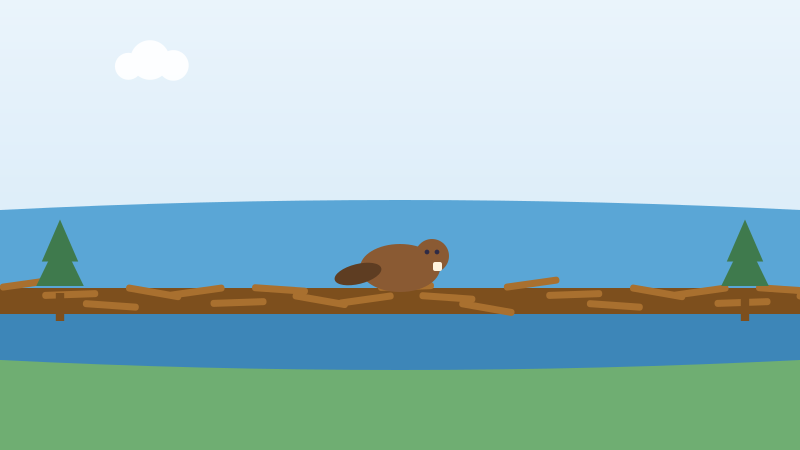

🦫 For Kids
The Beaver Dam So Long It Was Found From Space
Beavers built something so big that nobody noticed it until a satellite did.

A beaver dam is a wall of sticks and mud. Beavers build it across a stream to make a deep pond, because a deep pond keeps them safe from wolves and bears.
Most dams are about as long as a school bus. In Wood Buffalo National Park, in northern Alberta, the beavers built one about 850 metres long. That is longer than eight football fields in a row.
Nobody knew. That part of Canada is wet, wild and very hard to walk into. No road goes there.
In 2007 a scientist named Jean Thie was looking at pictures taken by satellites, studying the frozen ground. He saw a strange long line in the middle of the wetland. It was the dam.
Park rangers flew over it in a helicopter in 2010 to see it for themselves. A man named Rob Mark finally walked all the way to it in 2014. It took him days through mud and swamp.
Beavers cannot read a map and cannot see the whole dam at once. They just keep adding sticks where they hear running water. Families of beavers worked on it for many years, one stick at a time.
Now try three questions
No timer and no score to worry about. Every answer tells you why.
About this quiz
This story is about a dam roughly 850 metres long in Wood Buffalo National Park, built by beavers over many years and spotted by a scientist in satellite pictures in 2007.
It is written in short sentences for children aged six to nine, with a picture drawn for this site and three questions at the end. Tap the Read aloud button and the page will read the questions out loud.
More to explore
More true Canada stories for kids